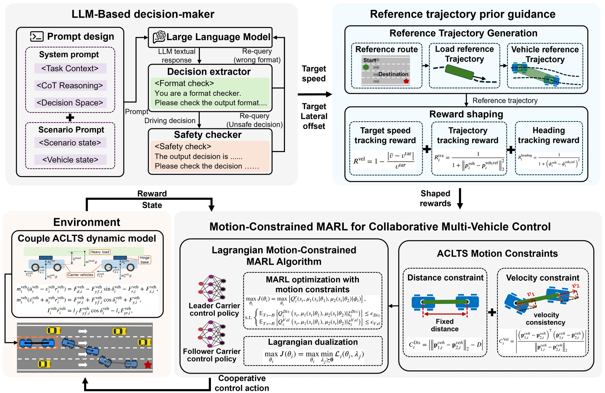

Reason about traffic
An LLM decision-maker interprets the driving scene and generates high-level decisions for the transportation system.
1 School of Mechanical Engineering, Beijing Institute of Technology
✉ Corresponding author: Guoqiang Li
Coordinated multi-vehicle motion in autonomous cooperative load transportation systems (ACLTSs) remains challenging owing to rigid-payload coupling and dynamic interactions with surrounding traffic. In this paper, we propose a large language model (LLM)-guided hierarchical constrained multi-agent reinforcement learning (MARL) framework for the collaborative control of the ACLTS. The framework integrates LLM-based driving guidance with constrained multi-agent policy learning to achieve safe and coordinated transportation. Specifically, we propose an innovative trajectory prior guidance method to translate the high-level driving decisions from the LLM into dense, geometry-consistent guidance, which improves the safety and learning efficiency of the collaborative control policies. To maintain coordinated motion among the carrier vehicles, we develop a motion-constrained MARL algorithm that jointly incorporates distance and velocity motion constraints into the MARL policy optimization process and resolves the constrained optimization problem through Lagrangian duality. Extensive experiments demonstrate that the proposed framework achieves superior performance in transportation safety and motion coordination. The learned policy achieves a 90.4% task success rate in transportation tasks. It also reduces the distance and velocity constraint violations by 91.0% and 77.6%, respectively, satisfying both motion constraints simultaneously at 97.7% of the evaluated time steps. Further experiments in highway, roundabout, and intersection scenarios demonstrate the framework’s applicability to different road geometries and traffic conditions.
Task success rate
Concurrent constraint satisfaction
Distance constraint violation
Velocity constraint violation

An LLM decision-maker interprets the driving scene and generates high-level decisions for the transportation system.
Load–vehicle geometry converts driving decisions into consistent reference trajectories and dense shaping rewards.
Constraint costs and adaptive Lagrange multipliers regulate vehicle spacing and velocity consistency along the payload.
Cooperative load transportation on the highway: our method and four baseline algorithms.
LLM-guided trajectory priors with motion-constrained multi-agent control.
Unconstrained off-policy multi-agent reinforcement learning.
Constrained multi-agent policy optimization.
On-policy optimization with adaptive Lagrange multipliers.
Multi-agent soft actor–critic with fixed constraint penalties.
Coordinated transportation through roundabouts, intersections, and highway traffic reconstructed from highD trajectories.
Coordinated turning along a curved route in surrounding traffic.
Collaborative vehicle control through a road intersection.
Simulated highway traffic reconstructed from real-world trajectories.
The highD scenario is reconstructed in highway-env using recorded vehicle trajectories. The paper uses 500 segments of 120 seconds each: 400 for training and 100 for testing. Policies are trained in the respective scenarios.
The proposed method achieves the highest task success rate and concurrent constraint satisfaction in the main benchmark.
| Method | Success rate ↑% | Distance violation ↓m | Velocity violation ↓m/s | Concurrent satisfaction ↑% of time steps |
|---|---|---|---|---|
| Our method | 90.4 ± 1.2 | 0.043 ± 0.016 | 0.019 ± 0.004 | 97.7 ± 1.5 |
| MADDPG | 42.0 ± 33.4 | 1.684 ± 1.609 | 0.521 ± 0.051 | 1.2 ± 1.0 |
| MACPO | 0.0 ± 0.0 | 0.479 ± 0.314 | 0.205 ± 0.062 | 27.3 ± 15.1 |
| MAPPO-Lag | 42.2 ± 37.0 | 0.999 ± 0.779 | 0.085 ± 0.027 | 7.6 ± 3.4 |
| MASAC-RP | 56.0 ± 6.9 | 0.493 ± 0.108 | 0.173 ± 0.046 | 7.4 ± 3.4 |
Mean ± standard deviation over five independent random seeds, with 100 evaluation episodes per seed. Concurrent satisfaction counts time steps at which both motion constraints are satisfied.
The proposed method achieves task success rates of 96.0%, 100.0%, and 86.0% in the roundabout, intersection, and highD-based highway scenarios, respectively.
| Scenario | Success rate ↑% | Distance violation ↓m | Velocity violation ↓m/s | Concurrent satisfaction ↑% of time steps |
|---|---|---|---|---|
| Roundabout | 96.0 ± 3.5 | 0.043 ± 0.038 | 0.045 ± 0.018 | 90.7 ± 4.2 |
| Intersection | 100.0 ± 0.0 | 0.038 ± 0.034 | 0.046 ± 0.050 | 91.7 ± 10.7 |
| highD | 86.0 ± 13.1 | 0.030 ± 0.030 | 0.026 ± 0.024 | 95.0 ± 6.4 |